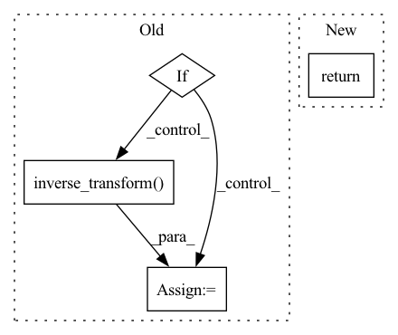

Pattern ID :17304
Before Change
avg_last_hidden, avg_last_hidden_test, transformed_val = self._compute_hidden_vals()
super().compute_confidence(test_predictions)
if self.args.dataset_type == "regression":
predictions = np.ndarray(
shape=(len(self.test_data.smiles()), self.args.num_tasks))
confidence = np.ndarray(
shape=(len(self.test_data.smiles()), self.args.num_tasks))
for task in range(self.args.num_tasks):
kernel = GPy.kern.Linear(input_dim=self.args.last_hidden_size)
gaussian = GPy.models.SparseGPRegression(
avg_last_hidden,
transformed_val[:, task:task + 1], kernel)
gaussian.optimize()
avg_test_preds, avg_test_var = gaussian.predict(
avg_last_hidden_test)
// // Scale Data
// domain = np.max(avg_test_var) - np.min(avg_test_var)
// // Shift.
// avg_test_var = avg_test_var - np.min(avg_test_var)
// // Scale domain to 1.
// avg_test_var = avg_test_var / domain
// // Apply log scale and flip.
// avg_test_var = np.maximum(
// 0, -np.log(avg_test_var + np.exp(-10)))
predictions[:, task:task + 1] = avg_test_preds
confidence[:, task:task + 1] = avg_test_var
predictions = self.scaler.inverse_transform(predictions)
confidence = (self.scaler.inverse_transform( predictions +
confidence) -
self.scaler.inverse_transform(predictions -
confidence))/2
After Change
confidence[:, task:task + 1] = np.sqrt(avg_test_var)
predictions = self.scaler.inverse_transform(predictions)
return predictions, self._scale_confidence(confidence)
class RandomForestEstimator(DroppingEstimator):In pattern: SUPERPATTERN
Frequency: 3
Non-data size: 4
Instances Fragment ID: 57500701
Project Name: aamini/chemprop
Commit Name: 59f9255e22db612b12c615473cfe42eb0fdb7630
Time: 2019-10-01
Author: liortulip@gmail.com
File Name: chemprop/train/confidence_estimator.py
M Class Name: GaussianProcessEstimator
N Class Name: GaussianProcessEstimator
M Method Name: compute_confidence(2)
N Method Name: compute_confidence(2)
M Parent Class: DroppingEstimator
N Parent Class: DroppingEstimator
M File Name: chemprop/train/confidence_estimator.py
N File Name: chemprop/train/confidence_estimator.py
M Start Line: 106
M End Line: 143
N Start Line: 110
N End Line: 139
Before Change
batches_seen = batch_idx + self.current_epoch * len(self.train_dataloader())
pred = self(x, y, batches_seen)
if self.scaler is not None:
y = self.scaler.inverse_transform( y)
pred = self.scaler.inverse_transform(pred)
loss = self.criterion(pred, y)
return lossAfter Change
train_loss = self._step(batch, batch_idx, dataset="train")
self.log("train_loss",train_loss)
return train_loss
def validation_step(self, batch, batch_idx):
Validates model for one step. Fragment ID: 57500702
Project Name: rose-stl-lab/torchts
Commit Name: 231acd6890b0f53af53e686860f916a7ee959601
Time: 2021-05-12
Author: akashshah59@gmail.com
File Name: torchts/nn/model.py
M Class Name: TimeSeriesModel
N Class Name: TimeSeriesModel
M Method Name: training_step(3)
N Method Name: training_step(3)
M Parent Class: LightningModule
N Parent Class: LightningModule
M File Name: torchts/nn/model.py
N File Name: torchts/nn/model.py
M Start Line: 53
M End Line: 62
N Start Line: 80
N End Line: 82
Before Change
if duration_model.prediction_type() == PredictionType.PROBABILISTIC:
// (B, T, D_out)
max_mu, max_sigma = duration_model.inference(x, [x.shape[1]])
if np.any(duration_config.has_dynamic_features):
// Apply denormalization
// (B, T, D_out) -> (T, D_out)
max_sigma_sq = (
max_sigma.squeeze(0).cpu().data.numpy() ** 2 * duration_out_scaler.var_
)
max_mu = duration_out_scaler.inverse_transform(
max_mu.squeeze(0).cpu().data.numpy()
)
// (T, D_out) -> (T, static_dim)
pred_durations = multi_stream_mlpg(
max_mu,
max_sigma_sq,
get_windows(duration_config.num_windows),
duration_config.stream_sizes,
duration_config.has_dynamic_features,
)
else:
// Apply denormalization
pred_durations = duration_out_scaler.inverse_transform(
max_mu.squeeze(0).cpu().data.numpy()
)
else:
// (T, D_out)
pred_durations = (
duration_model.inference(x, [x.shape[1]]).squeeze(0).cpu().data.numpy()After Change
max_mu.squeeze(0).cpu().data.numpy()
)
return max_mu, max_sigma_sq
else:
// (T, D_out)
pred_durations = ( Fragment ID: 57500698
Project Name: r9y9/nnsvs
Commit Name: 62d633dac20c0e1e7adb346ea1fc83685a45727d
Time: 2022-03-11
Author: zryuichi@gmail.com
File Name: nnsvs/gen.py
M Class Name: AnonimousClass
N Class Name: AnonimousClass
M Method Name: predict_duration(11)
N Method Name: predict_duration(11)
M Parent Class:
N Parent Class:
M File Name: nnsvs/gen.py
N File Name: nnsvs/gen.py
M Start Line: 281
M End Line: 304
N Start Line: 291
N End Line: 303